Safari Journey
Safari Journey di Taman Safari Bogor merupakan pengalaman unik yang mengajak pengunjung untuk menjelajahi dunia satwa dalam konsep safari. Dengan lebih dari 2.500 hewan dari berbagai spesies, kebun binatang ini menyediakan pengalaman edukatif yang mengesankan.
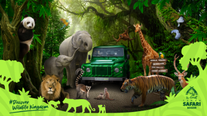
Pengunjung dapat melihat satwa dari dekat dan memahami perilaku serta habitat mereka melalui jalur safari yang telah dirancang khusus. Konservasi dan pendidikan menjadi fokus utama di sini, memungkinkan pengunjung untuk belajar tentang pentingnya menjaga keanekaragaman hayati.
Recreation Areas
Taman Safari Bogor juga menawarkan berbagai tempat rekreasi yang dibagi menjadi tiga kategori:
Tempat Rekreasi Anak Anak
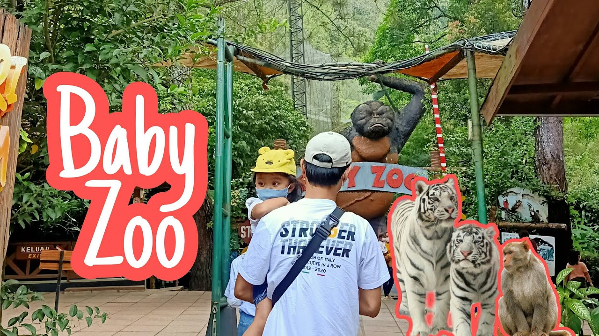
Area ini dirancang khusus untuk anak-anak dengan berbagai wahana dan kegiatan yang mendidik serta menghibur. Dari taman bermain hingga interaksi langsung dengan hewan, tempat ini menjadikan pengalaman belajar semakin menyenangkan bagi si kecil.
Wahana
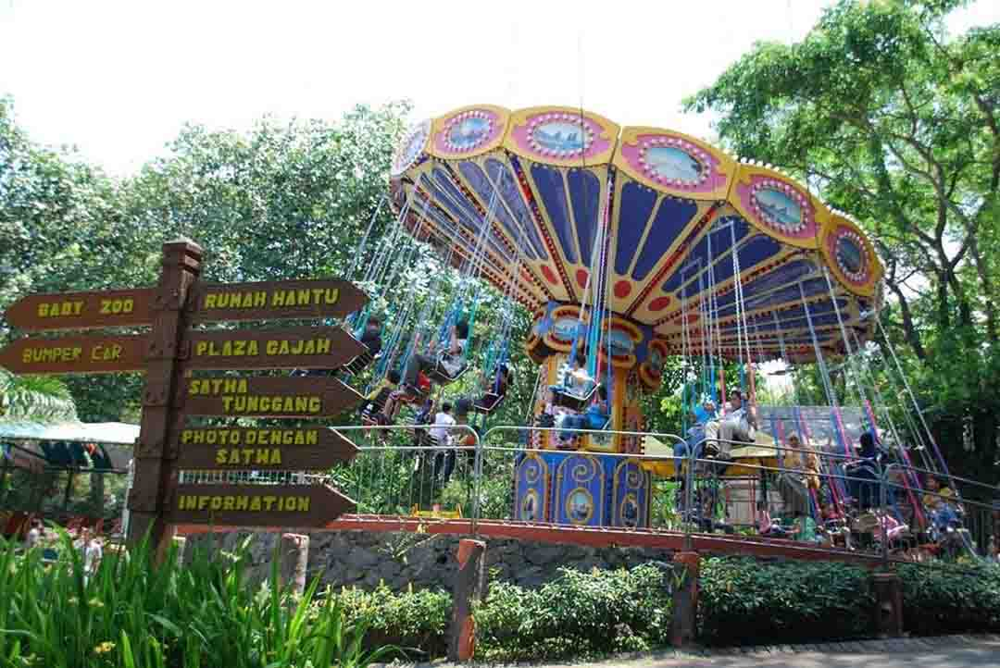
Bagi pengunjung yang mencari adrenalin, Taman Safari menyediakan berbagai wahana menarik. Dari permainan air hingga atraksi yang menguji keberanian, setiap wahana menawarkan keseruan dan kegembiraan untuk semua usia. Wahana-wahana ini dirancang untuk memberikan pengalaman yang aman dan mengasyikkan.
Pertujukan
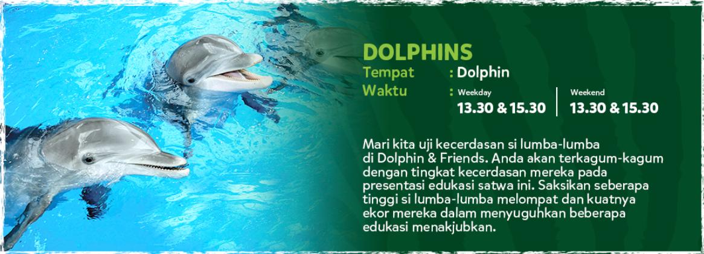
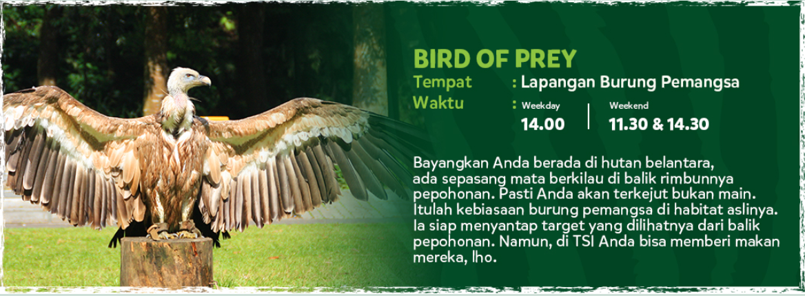
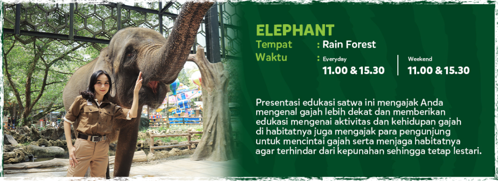
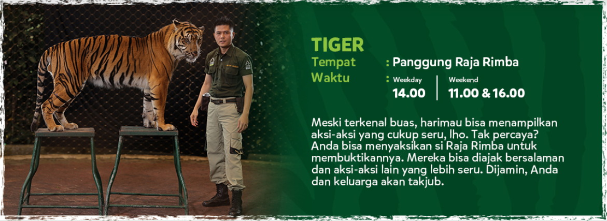
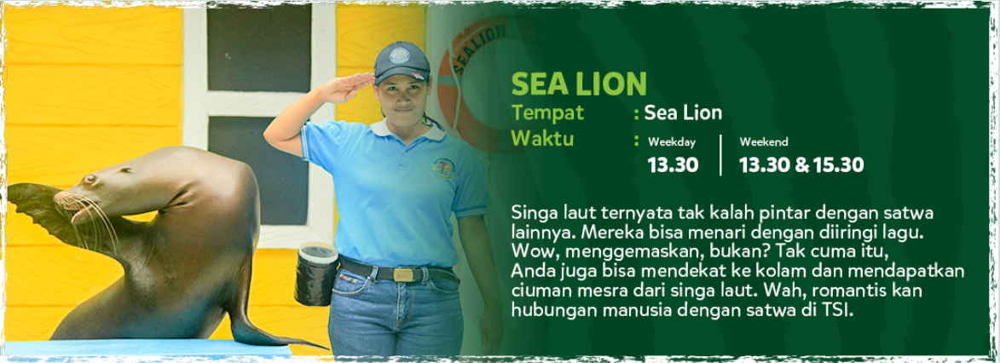
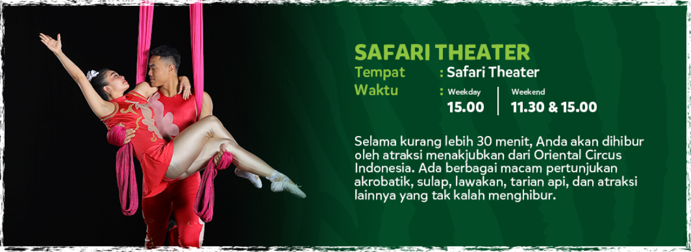
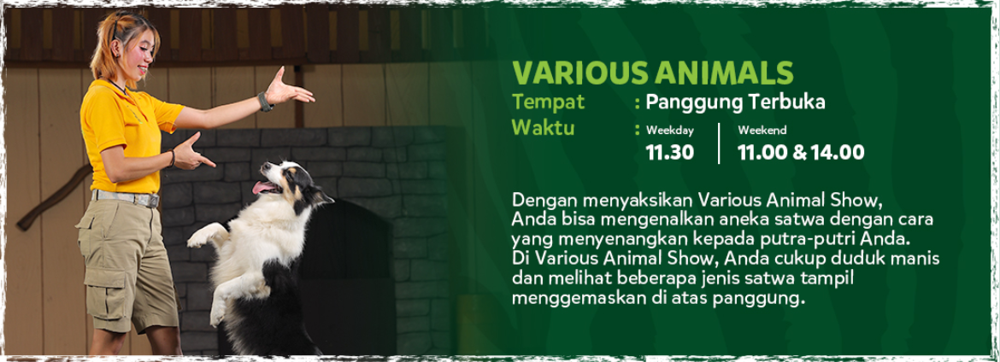
Pertunjukan satwa di Taman Safari adalah highlight yang tidak boleh dilewatkan. Setiap pertunjukan dirancang untuk menghibur sekaligus mengedukasi pengunjung tentang perilaku dan kemampuan hewan. Dari atraksi lumba-lumba hingga pertunjukan burung, setiap momen diwarnai dengan informasi menarik tentang satwa dan upaya konservasi yang dilakukan.
Safari Info
Sebelum mengunjungi, penting untuk mengetahui beberapa informasi dasar mengenai Safari Journey:
- Jam Operasional: Taman Safari Bogor buka setiap hari dengan jam operasional yang bervariasi, sehingga pengunjung disarankan untuk memeriksa jadwal sebelum berkunjung.
- Tiket Masuk: Terdapat berbagai pilihan tiket yang tersedia, termasuk tiket keluarga dan paket spesial untuk kelompok.
- Fasilitas: Taman Safari menyediakan berbagai fasilitas, termasuk restoran, area parkir, dan toko souvenir untuk kenyamanan pengunjung.
- Edukasi dan Konservasi: Taman ini secara aktif terlibat dalam program konservasi dan penelitian, menjadikannya tempat yang tidak hanya menyenangkan tetapi juga mendidik.
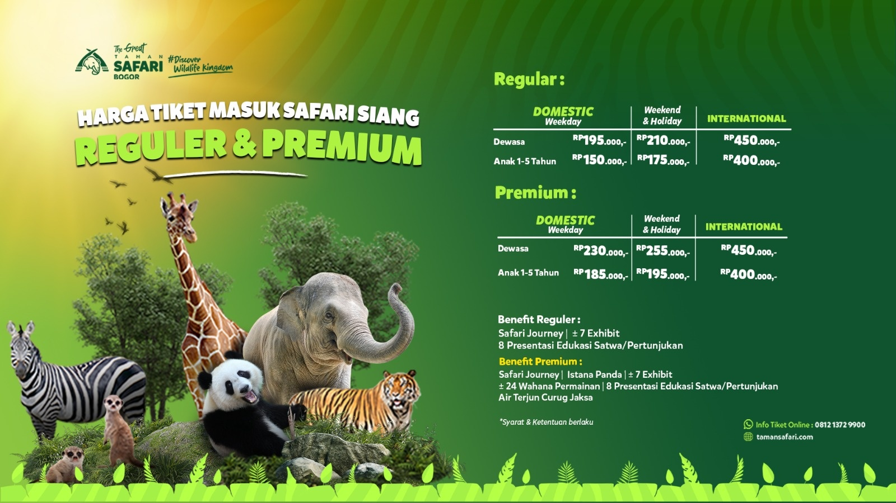
Dengan semua yang ditawarkan, Safari Journey di Taman Safari Bogor adalah destinasi yang ideal untuk seluruh anggota keluarga. Anda akan mendapatkan pengalaman yang berharga dan mendalam tentang keindahan dunia satwa dan pentingnya pelestariannya.